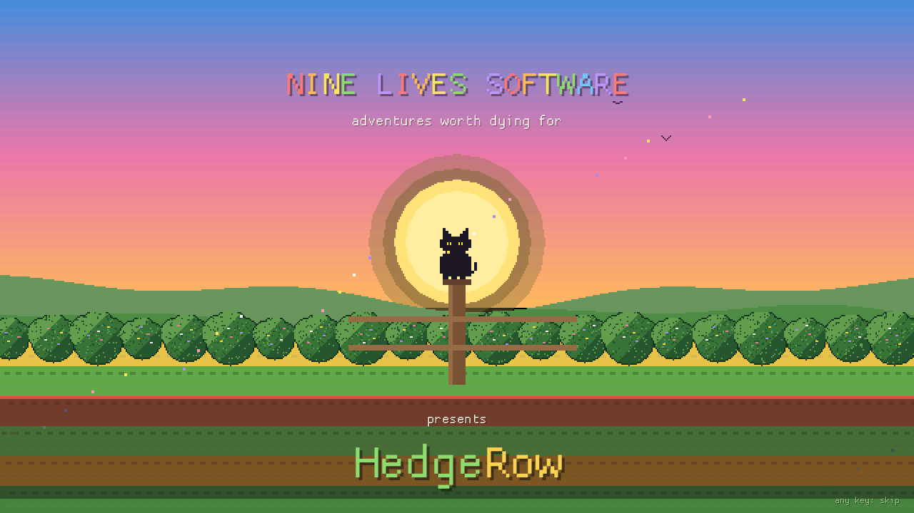
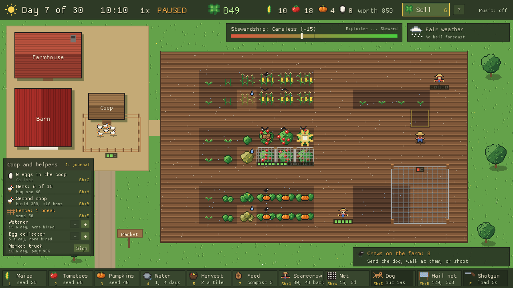
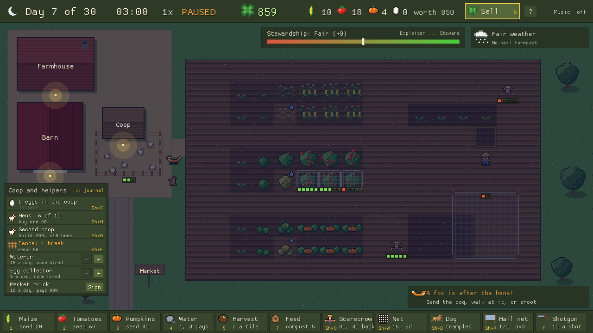
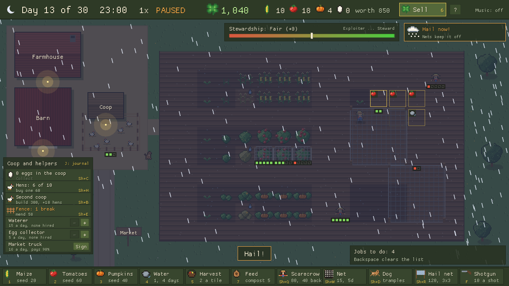
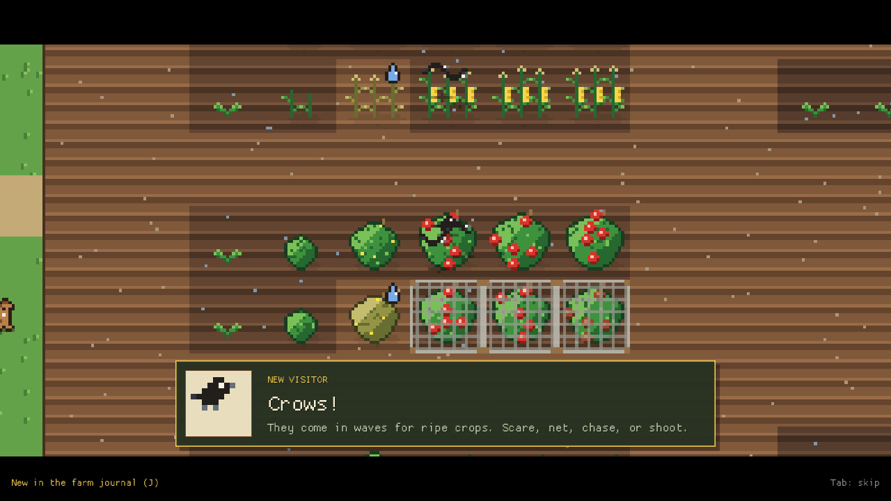
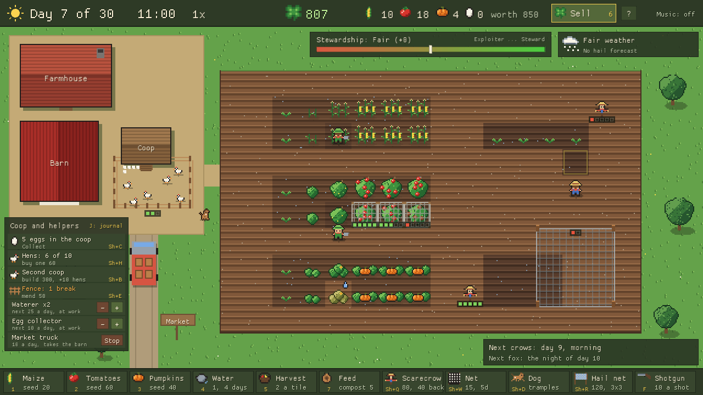
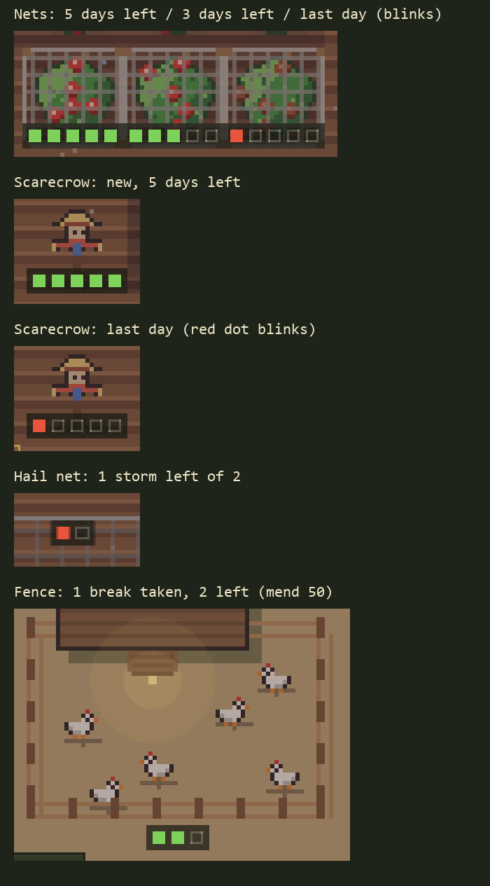
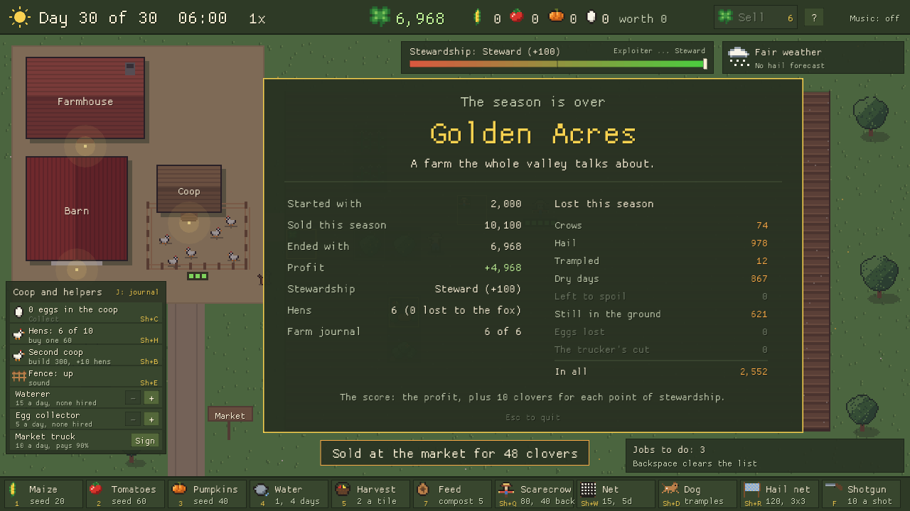
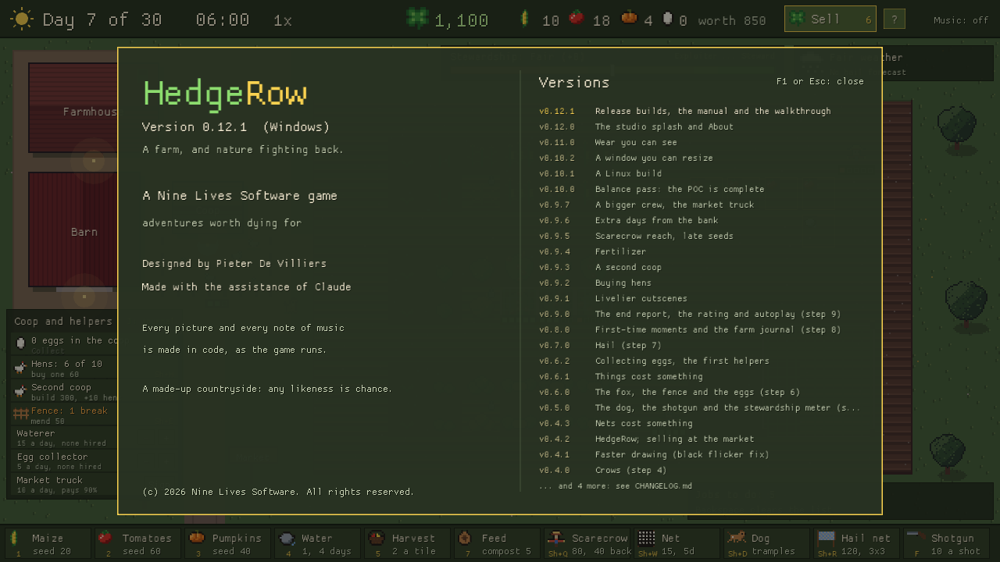

First lookOne season · v0.12.3 · browser, Windows & Linux · by Pieter De Villiers
A whole season in two and a half minutes: the game played by its own test script, filmed by the game itself.
Thirty days, a field, six hens, a dog and 2,000 clovers. Plant, water, harvest and
sell - while nature fights back. Crows come for the ripe tomatoes, a fox comes at night
for the hens, and hail is forecast for day 14.
You don't fight nature: you protect the farm. Scare things off, fence them out, cover
the crops - or reach for the shotgun, and live with what it costs. At the end of the
season the farm is rated on the money you made and on how you treated the land.
The browser edition needs a keyboard and mouse (not phones yet); click the game once for sound.
The Windows download is a single .exe (no installer); Windows may warn that it's from
an unknown publisher - choose "More info" then "Run anyway". The Linux download is a .tar.gz:
unpack it and run ./hedgerow (Ubuntu 22.04, Debian 12, Fedora 35 or newer).
Want a plan? The walkthrough shows how to farm a Golden Acres season.
The farm
Three crops - maize, tomatoes, pumpkins - each with its own thirst, price and time to ripen.
Water them, feed them, harvest them before they spoil, and walk the harvest to market.
A farmer who walks the field: queue up jobs with a click or a drag, but they can't be everywhere when the crows come.
Crows in waves, a fox every third night, and hail with three days' warning.
Three ways to answer: prevent (scarecrows, nets, a fence, hail nets), chase off
(the dog, the farmer - mind the trampled crops) or shoot (quick, and it costs you).
Every defence wears out, and shows it: dots for the days, storms or breaks it has left.
A stewardship meter from Exploiter to Steward, and a farm rating from Dust Bowl to Golden Acres.
Hens and eggs, a second coop, hired helpers, a market truck, three kinds of feed,
and extra days from the bank when the pumpkins are nearly ripe.
First-time moments with a little cutscene, collected in a farm journal.
Pixel art and a banjo tune, all made in code. Resize the window or go full screen (F11).









Docs
Player's manual - the farm, the controls, crops, threats, defences, the rating
Walkthrough - a plan for a Golden Acres season, with the numbers